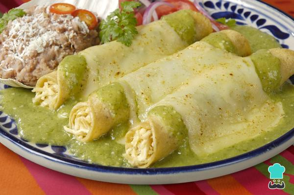

Enchiladas Recipe

Description
With this recipe you will be cooking some delicious enchiladas poblanas, straight from the mexican state of Puebla.
Ingredients
- 5 chiles poblanos
- 1/2 chile verde
- 1 can of evaporated milk
- 250gr of sour cream
- 1/2 of a butter bar
- 20 corn tortillas
- fresh cheese
- 1 chicken breast
Steps
- First, wash the chiles poblanos and chiles verdes.
- Second, roast the chiles and remove the skin and seeds.
- Mix the chiles poblanos and chiles verdes with the sour cream and evaporated milk in the blender, blend the mix.
- Melt some buttermilk in a pan and add the mix from the previous step. Boil for 2 minutes.
- Add oil to another pan and and fry the corn tortillas, then, put the fried tortilla in the salsa made in the previous step.
- Add some chicken breast in the tortilla, then add the topings.
Go back